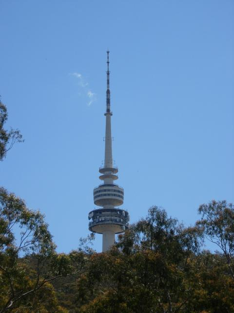
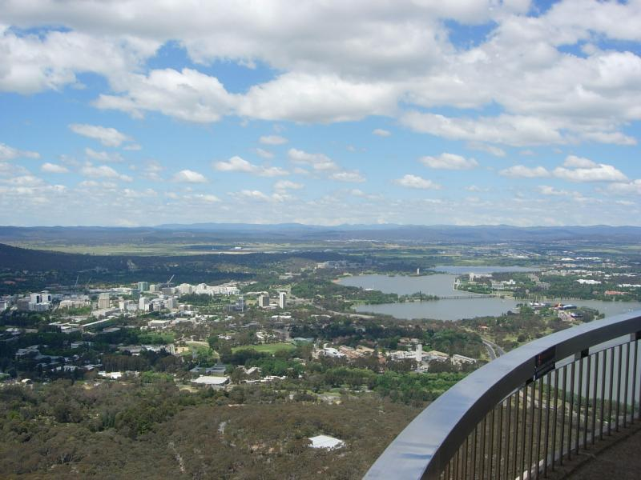
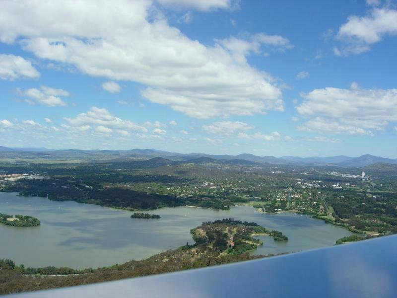
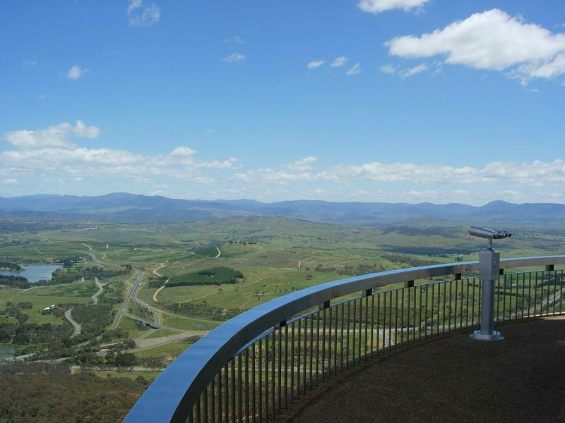
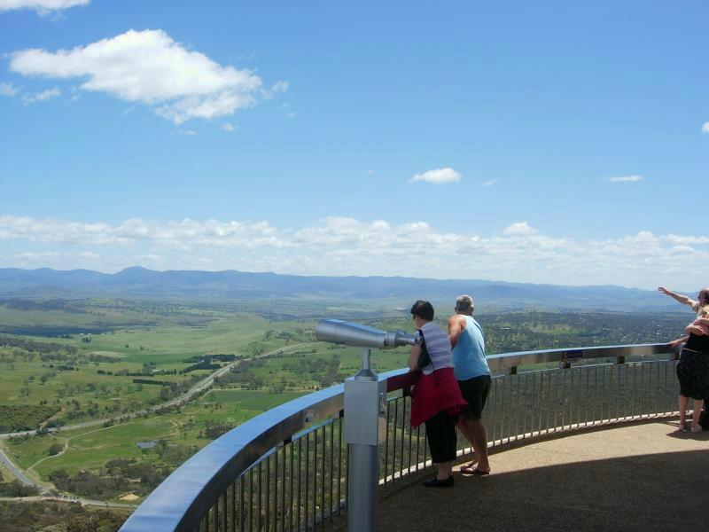

-=Telstra Tower=-

If you want proof that extraterestrials are involved in human affairs, consider the Martian architecture of the Telstra (Ma Oz) tower. It was erected on top of Black Mountain in a nature reserve overlooking Canberra, over great protest. The radio tower on top was quickly outdated when microwave phone transmission arrived. The best one can say is that it's prevented the proliferation of ugly cell towers, and it's a handy way to tell which direction is West.

Here are a set of view from the observation deck, from the north Canberra cityscape...

Saunder's Paradox. Someone once told me the stars shine brighter in the Southern hemisphere. Physics major that I was, I said it's not really true, it's just less developed there with less light pollution. Now that I'm here...the stars in Canberra shine brighter than the stars in Front Royal, which is a smaller town. Like the other famous paradox in astronomy (Ohler's), I'm sure there's a sensible explanation...somewhere.

And West toward the Outback

Did I make it to the Outback? No one ever does. The Outback is whatever's further out than you are.
Thanks to James Cherryh for this explanation. (The silent "h" is an immigration typo. Like Joe Furphy, who opened Furphy's restaraunt in Salida CO. Oddly "furphy" means a screwup here. It's named after a brand of miner's equipment--perhaps due to the same immigration screwup of Murphy.)